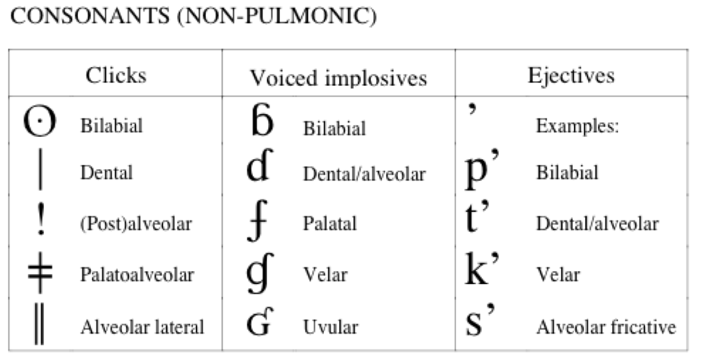

All my slides are presented using [reveal.js](http://revealjs.com), and do not exist as Powerpoint or PDF, but instead, as websites. (Please note that PDF/printing is not 'officially supported' by the instructor, and the results may be very strange in places. Sorry!) --- # Linguistics 101: An Introduction to Language ### Matthew Zaslansky --- ### Today's Plan - Introductions - What is this course about? - How will we teach it? - What is Linguistics? - Why do we care? --- # Introductions --- ## Matthew Zaslansky Linguist, nerd for all things linguistic, and your instructor --- ## IA Introductions --- Olivia, your instructional assistant and section leader <img class="r-stretch" src="people/olivia.png"> --- Hugo, also your instructional assistant and section leader! --- ## And an acknowledgement Special thanks to Will Styler, whose teaching and content has created much of this lecture! Used with his permission <img class="r-stretch" src="people/will.jpg"> --- ## We are Linguists! - Gigantic professional language nerds --- ### We're going to learn how we linguists talk about Language - We'll talk about what Language is - We'll talk about different aspects of languages - We'll talk about the subfields which tackle different problems in Language - We'll talk about the various tools and techniques that Linguists use - We'll look at actual language data to get a sense of just how complicated all this is - We'll have lots of fun* in the process --- ### That's what this course is about --- ## How will we teach this class? --- ### We'll teach you here, in section, and in office hours - Here, we'll talk about concepts and address questions - In section, you'll dive deep with language data - Please attend your designated section - If you'd like to try and attend a different section, email that section's IA - Office hours are your home to clarify concepts - We have a massive number of combined office hours, use them! --- ### You'll check your learning using homework, the exam, and clickers - Five homeworks - A Final Exam (held in this room, ideally!) - WebClicker questions --- ## Let's look at the syllabus --- ## Clicking --- ### You'll need an account on <webclicker.web.app> - Register using the course code on the syllabus - You can click in with any web-attached device --- ### This is a clicker question! A) One Answer B) Another C) A third D) The answer is D E) I'm not paying attention. <section class="clicker"></section> --- ### This is a clicker question! A) One Answer B) Another C) A third D) <correct>The answer is D</correct> E) I'm not paying attention. --- ### When should you tell Matt about any special accommodations you'll need? A) Within the first two weeks B) By the end of the quarter C) When I'm freaking out about my grade at the end of the quarter D) I won't tell him, then pretend I did when it's an issue at the end of the quarter <section class="clicker"></section> --- ### When should you tell Matt about any special accommodations you'll need? A) <correct>Within the first two weeks</correct> B) By the end of the quarter C) When I'm freaking out about my grade at the end of the quarter D) I won't tell him, then pretend I did when it's an issue at the end of the quarter --- ### Coming to lecture isn't magic - You'll probably want to take notes - Don't write down the words I say, write down the ideas - Summarize in your own words - Slides are available on the syllabus - Write down questions you have during the lecture - We as a species are awful at multitasking - That's right. Close Discord. - Or just be prepared to re-study later --- ### We're meeting in meatspace! - **Masks are welcomed, but not required.** - Here's hoping it stays that way - We have a plan in place, in case it doesn't - Come to class healthy and prepared - **You have no excuse to come to class sick!** - The attendance policy is lax, and you can always just podcast. --- ### Pro-Tip: Sincere effort is incredibly important to me - 'Blow off' the class, or try to lawyer or cajole your way into an A, and you'll find much no sympathy nor help - Low effort, low integrity, or 'cut-corners' work insults the people who you need help from - Put in the effort for us, and we’ll put in effort for you - We will bend over backwards to help students who are making a sincere effort - **If you're struggling, talk to us ASAP** --- ## Any questions? --- # So, what is Linguistics? * (Most people have *zero* clue) --- ### "Oh, you're a linguist? Cool!" ## "How many languages do you speak?" <!-- .element: class="fragment" --> --- Many linguists speak more than one language, but... ### There's way more to Linguistics than knowing languages <!-- .element: class="fragment" --> --- ### Linguists study Language * We're interested in how 'Language' works for humans - ... and we study it by looking at Spanish, or Laotian, or Russian, or Kumeyaay * Learning languages can be a part of that, but it's not the whole! --- ### We're interested in Capital L 'Language' - ... even as we're studying individual languages --- ... but we have a problem ... --- ## Language is amazingly complex --- ### "The duck quacked gleefully at his bae." <img class="r-stretch" src="img/bird_mallard.jpg"> --- ### "The duck quacked gleefully at his bae." - How did I make that sequence of sounds and how did you recognize it? - Why is there a [t] at the end of quack rather than a [d]? - What does that last sound mean anyways? - Who quacked at whom? When? How do we know? - What was gleeful? - Is the duck single? Happy? - What's a 'bae' anyways? Can a duck have a bae? --- ### (Yes, my slang and memes are dated) - You'll get the chance to help me in future homework assignments - <img class="r-stretch" src="humorimg/fellowkids.gif"> --- ### Language is complex * ## Linguistics has to be complex too --- ### We'll look at all the complexities - We'll look at many of the central subfields of Linguistics - We'll examine other questions that we linguists are also interested in. --- ### What elements of Linguistics will we cover this quarter? - "How does talking work?" - Phonetics - "How do sounds change when we combine them?" - Phonology - "How do we build words?" - Morphology - "How do we combine words into sentences?" - Syntax - "What does it all mean?" - Semantics and Pragmatics --- ### What *won't* we cover this quarter - "How do I have better grammar and be more articulate?" - "How does Poetry work? Why do some sentences sound more beautiful?" - "How do I learn languages more quickly and effectively?" - "What's the process of becoming a good English-to-Japanese translator?" - "How does French, or Spanish, or Russian, or Wichita work?" --- So, that's what we're doing here --- # Why on Earth does anybody care about Linguistics? --- ### There are a million answers to that question - Every linguist has their own - ... and you'll have your own - ... when you become a linguist ---  --- ### I'll give you two answers - Because Linguists do interesting things - Because Language is AWESOME --- # Linguists do interesting things! --- ## Theoretical Linguistics --- ### Theoretical Linguistics - How can we describe *how people communicate*? - How can we describe *the things people don't do*? - What are the best models to help us understand language? - What are the best models which mirror our own cognition? - How does language change over time? --- ### Linguistic Typology - How do languages *generally* accomplish communicative goals? - Are there patterns across the world? - What kinds of things are languages more and less likely to do? - Are there *universal* tendencies in language? --- ## Experimental work in Linguistics! --- ### Pneumotachography (Airflow Measurement) <img class="r-stretch" src="phonmedia/tools_airflowcu.jpg"> --- ### Electromagnetic Articulography (EMA) <img class="r-stretch" src="phonmedia/ema_will.jpg"> --- ### Electromagnetic Articulography (EMA) --- ### Electromagnetic Articulography (EMA) <img class="r-stretch" src="phonmedia/ema_will_3.jpg"> --- ### Electromagnetic Articulography (EMA) <img class="r-stretch" src="phonmedia/ema_will_18.jpg"> --- ### Ultrasound <img class="r-stretch" src="phonmedia/tools_ultrasound.jpg"> --- ### Ultrasound <video width="1200" height="600" controls id="video"> <source src="video/ultrasound_northwind.mp4"> </video> <br> <tiny>From University of Michigan Phonetics Lab</tiny> --- ### Acoustics <img class="r-stretch" src="phonmedia/noisewaveform.jpg"> --- ### Acoustics <img class="r-stretch" src="phonmedia/noisebbspectrogram.jpg"> --- ### Eyetracking <video width="1200" height="600" controls id="video"> <source src="video/eyetracking_english.mp4"> </video> <br> <tiny>From University of Michigan Phonetics Lab</tiny> --- ### Neurolinguistics - Electroencephalography (EEG) - fMRI - Magnetoencephalography (MEG) --- ## Other fun Linguistic Enterprises --- ### Language Documentation <img class="big" src="lotwimg/americadiversitymap.png"> --- ### Language Documentation Language documentation includes sign languages! https://www.youtube.com/watch?v=X2G3MD28lYM --- ### Language Documentation <img src="img/arrival_heptapod.jpg"> --- ### Computational Linguistics --- ### Computational Linguistics <img src="humorimg/siricallambulance.jpg"> --- ### Computational Linguistics <img src="img/google_assistant.png"> --- ### Computational Linguistics <img class="big" src="img/NSA.jpeg"> --- ### One of the current "best" commercial systems: ChatGPT 4o > "Write me a short reveal.js slide for an intro to linguistics class containing at least three puns" --- # Introduction to Linguistics Welcome to the study of language, where syntax isn’t a tax on sin, and semantics is *meaningful*. Let’s phon-etic-ally break it down! --- ## Why Study Linguistics? - Because language rules, and we're here to rule the language! - You'll be able to syntax your friends... no, seriously, teach them proper sentence structure! - Be the person who corrects “whom” without missing a beat. It's all relative! --- ## Key Areas - **Phonology:** It’s all about sound... like music to your ears, except we analyze it. - **Syntax:** Let's get in formation! Word formation, that is. - **Semantics:** It’s not what you say, it’s what you mean—unless you’re a pun, then it's both. --- ### The AI apocalypse is mid --- ### Computational Linguistics Tasks - Automatic Summarization - Information extraction and Question Answering - Ad targeting - Sentiment Analysis - Pattern recognition - Keyword/Concept Mention Detection --- ### Forensic Linguistics - Emergency call Analysis - Authorship attribution - Social Media - Ransom demands - Suicide letters - Shakespeare - Voice identification - 'Voiceprint ID' - The Bin Laden Tapes - Trademarks --- ### Forensic Linguistics <img src="img/exxon_valdez.jpg"> --- ### Advertising and Branding <img class="big" src="img/swiffer.jpg"> --- ### Conlanging - Creating and developing new languages for fun or for film - Examples are Dothraki, High Valyrian, Nav'i, Languages from Dune - Prominent conlangers are [David J Peterson](https://en.wikipedia.org/wiki/David_J._Peterson) and [Jessie Sams](https://jessiesams.com/) - Take LIGN 5 for more conlanging! --- ### Lexicography <img class="big" src="img/oed_nerd.jpg"> --- ### Lexicography (You have free access to the [Unabridged Oxford English Dictionary](http://www.oed.com/) on campus!) --- ### What else do linguists do? - Check out the [Linguistics Career Launch YouTube Channel](https://www.youtube.com/channel/UCNJRxM5T1SAtgT6Bhcext2Q) --- ### So, Linguists do awesome things --- ... but the best reason to care about linguistics is that ... --- # Language is awesome --- <img class="big" src="img/sampler.jpg"> --- ## Languages differ in the sounds they use ---  --- <img src="phonmedia/avatar.jpg"> --- <audio controls src="phonmedia/mandarintwistercharles.wav"></audio> <audio controls src="phonmedia/mandarintwisterdimsun.wav"></audio> <lang>Mandarin Chinese</lang> <center> <table> <tr> <td>西施死时四十四<br> 十四是十四<br> 四十是四十<br> 十四不是四十<br> 四十不是十四。<br></td> <td>Xi shi si shi si shi si<br> Shi si shi shi si<br> Si shi shi si shi<br> Shi si bu shi si shi<br> Si shi bu shi shi si.<br></td> <td> /ɕi ʂi si ʂi si ʂi si<br> ʂi si ʂi ʂi si<br> si ʂi ʂi si ʂi<br> ʂi si bu ʂi si ʂi<br> si ʂi bu ʂi ʂi si./<br></td> </tr> </table> Xi Shi died in 44. Fourteen is fourteen. Forty is forty. Fourteen is not forty. Forty is not fourteen. </center> --- ## Languages differ in how they put sounds together --- <lang>English</lang><br><ldata>I-E, Germanic, West Germanic - All over the place</ldata> 'Strengths' (/stɹɛŋkθs/) --- <lang>Russian</lang><br><ldata>I-E, Slavic, East - Russia</ldata> ‘Glance’ - взгляд /vzglʲat/) ‘Of Construction’ - строительств (/strʌˈʲitʲɛlʲstf/) --- <lang>Czech</lang><br><ldata>I-E, Slavic, West, Czech-Slovak - The Czech Republic</ldata> Strč prst skrz krk ‘Stick your finger down your throat’ --- ## Not all languages use the same modality! --- ### Spoken languages use speech to express meanings - We're familiar with this! - ... but even 'spoken' language involves gesture and visual cues! --- ### Written language is used to express meanings - Like this! - Not all languages have writing systems - Some different languages use the same writing system - Some people can only understand each other in writing --- ### Signed languages use gesture, facial expression, and movement to express meanings [Source: Sign with Robert](https://giphy.com/signwithrobert) --- ### Other languages are felt! - Braille is a touch-based writing system for English - [ProTactile](https://www.youtube.com/watch?v=vfICNTq6ITY) is an emerging language designed to be used by folks who are both Deaf and Blind. - Other forms of communication which rely on touch exist! --- ## Languages differ in how they work with words --- <lang>English</lang><br><ldata>I-E, Germanic, West Germanic - All over the place</ldata> Three cats robbed the shopping mall. Three cat-s rob-ed the shop-ing mall --- <lang>Wichita</lang><br><ldata>Caddoan, Northern Caddoan - Oklahoma</ldata> Ti’i haskwákiyakirikickichis (‘Until there was just a little trickle of water’) --- <lang>Wichita</lang><br><ldata>Caddoan, Northern Caddoan - Oklahoma</ldata> Kiyakiicíwa:cé:hirʔasʔirhawi (‘There was the big buffalo lying there.’) --- ## Languages have unique terms and structures to discuss the world --- <lang>Finnish</lang><br><ldata>Uralic, Finnic - Finland</ldata> 'Sisu' * [(Just read the Wikipedia Page on it)](http://en.wikipedia.org/wiki/Sisu) --- <lang>Yagán</lang><br><ldata>Linguistic Isolate - Chile</ldata> 'Mamihlapinatapai' * "a look shared by two people, each wishing that the other will offer something that they both desire but are unwilling to suggest or offer themselves."[<src>[1]</src>](http://www.wordfocus.com/mamihlapinatapai.html) * <danger>The last fluent speaker of this language died in 2022.</danger> --- <lang>Turkish</lang><br><ldata>Turkic - Turkey</ldata> * 'gel-di' "He came" * 'gel-miş' "He came, to the best of my knowledge" --- ## Linguists study *all* language, not just 'proper' language --- ### New language has studyable meaning too! - rizz - "Matt may not have enough rizz to get away with using Gen-Z slang." - cooked - "Matt really cooked a lecture on Large Language Models." - uwu - "I am going to UwU this presentation!" - simp - "I finished in 25 minutes, that exam was simp!" - it's giving - "Charity is really important, it's giving that matters most" --- ### I know what you're thinking... --- <img class="r-stretch" src="humorimg/cringe.gif"> --- ### This shows we have intuitions about all language use! - We can talk about any words, even new words, being grammatical or not - We know when *any* language that we use is being used properly - Words have legitimate and 'correct' meanings, even if they're not in the dictionary - The -ussy suffix (e.g. bussy, pizzussy) was the American Dialect Society's 2022 'Word of the Year' - All language is language! --- ### Let's try that again - rizz - "She seduced her with AI Generated romantic texts. ChatGPT got W rizz." - cooked - "Matt used 'up' in his first 'cooked' example. His knowledge of current slang is cooked." - uwu - uwu is not an adjective but an attitude. winguwistics! - simp - "Don't be a simp, Chomksy is never going to cite you even if you mention him 500 times." - it's giving - "Nice outfit, Matt. It's giving quarter-life crisis." --- ### So, there you go That's why we care. --- ## My goal for this course --- <huge>Thank you!</huge>